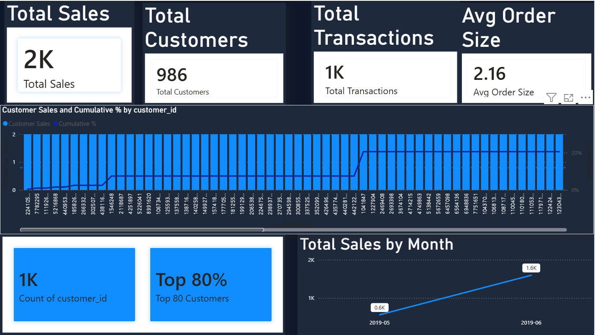
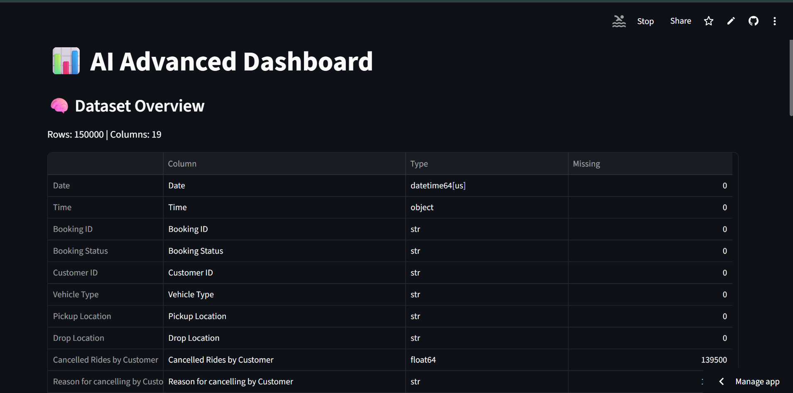
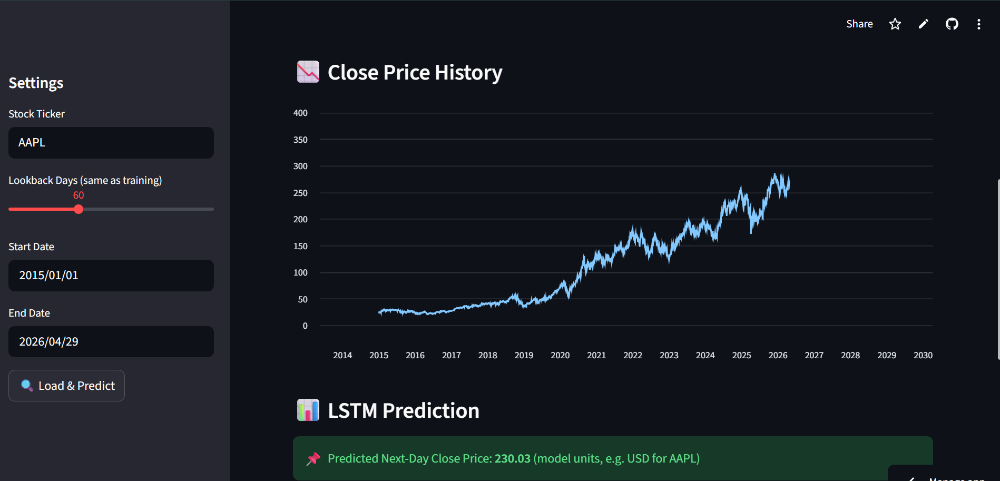
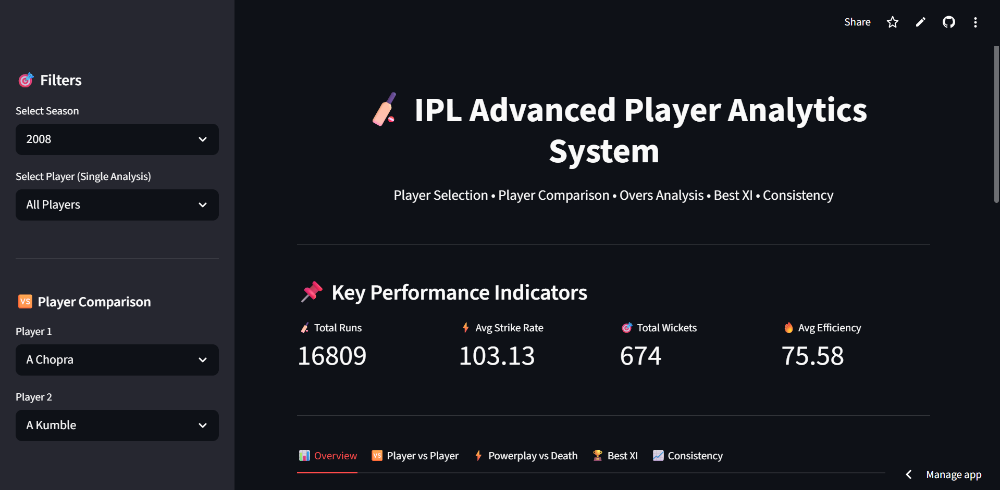

Data Analyst | Dashboard Builder | SQL & Python
📄 Resume
I am an aspiring Data Analyst passionate about transforming raw data into meaningful insights.
I specialize in SQL, Python, and Power BI to build dashboards and analytics solutions.
I enjoy solving real-world problems using data and continuously improving my analytical thinking.
My goal is to work in a data-driven environment where I can contribute to impactful decision-making.
Built using Power BI & SQL with KPI tracking and Pareto analysis.

Python-based system to convert raw datasets into dashboards.

Analyzed stock trends using Python and data visualization.

Sports analytics dashboard for performance insights.

Email: hardikpetkar826@gmail.com
Phone: +91 7208658582